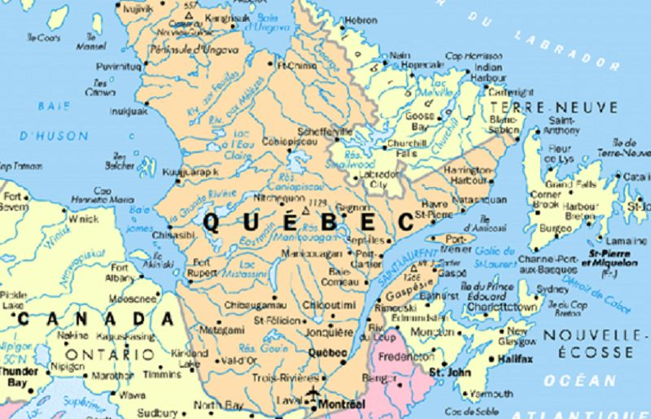

|

|
Québec est une destination fascinante pour les touristes, avec une richesse historique, culturelle et naturelle. Le Vieux-Québec, classé au patrimoine mondial de l'UNESCO, est un incontournable avec ses rues pavées, ses fortifications et ses monuments emblématiques comme la Place Royale et le Château Frontenac. La promenade sur la terrasse Dufferin offre une vue panoramique spectaculaire sur le fleuve Saint-Laurent.
Les Chutes Montmorency, situées à quelques minutes de la ville, impressionnent par leur hauteur supérieure à celle des chutes du Niagara. En été, les visiteurs peuvent explorer l'Île d'Orléans, un joyau naturel avec des paysages pittoresques, des vergers et des produits locaux artisanaux. Pour une immersion culturelle, ne manquez pas les musées comme le Musée de la civilisation et les galeries d'art du Petit Champlain.
En hiver, Québec se transforme en un véritable pays des merveilles avec le Carnaval de Québec, l'un des plus grands festivals d'hiver au monde, proposant des parades, des sculptures de glace et de nombreuses activités hivernales. Les amateurs de nature apprécieront également une randonnée dans le Parc de la Jacques-Cartier, célèbre pour ses paysages montagneux et ses activités en plein air comme la raquette ou le canoë.
Enfin, une croisière sur le fleuve Saint-Laurent permet de découvrir la ville sous un autre angle et d'admirer ses magnifiques panoramas.
|